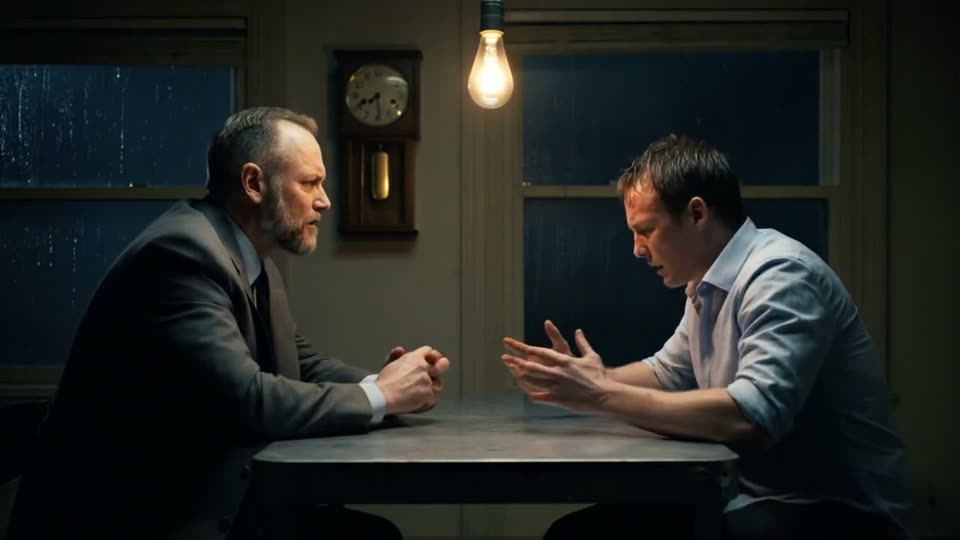

A medium shot in a dimly lit interrogation room. The seasoned…
PRF-023PerformanceGoogle Veo (official guide example)by Google Cloud (official Veo prompt guide)2026-10-17

Dialogue: spoken words from characters or a narrator. For example, "the man in the red hat says: Where is the rabbit?", "a voiceover with a polished British accent speaks in a serious, urgent tone", "two people discuss a
Prompt
A medium shot in a dimly lit interrogation room. The seasoned detective says: Your story has holes. The nervous informant, sweating under a single bare bulb, replies: I'm telling you everything I know. The only other sounds are the slow, rhythmic ticking of a wall clock and the faint sound of rain against the window
Our Seedance 2.5 adaptation
[ADAPTED for Seedance 2.5 by Grok Bot; not the creator's prompt. Follows the official BytePlus Seedance 2.5 prompt guide: asset binding → one-sentence summary → integer-second timeline → consistency notes → negatives.] API: duration 10, ratio 16:9, resolution 1080p, generate_audio true. Assets (optional): Image 1 is the detective and Image 2 is the informant, uploaded in order of first appearance. Summary: A 10-second tense noir dialogue scene in a dimly lit interrogation room, with a seasoned detective and a nervous informant sweating under a single bare bulb. 0-4s: Medium two-shot, locked-off. The detective leans forward on the table. Detective's line (low, unhurried): "Your story has holes." 4-8s: Cut to a medium close-up of the informant. Sweat beads on his brow and he swallows before answering. Informant's line (pleading, voice cracking): "I'm telling you everything I know." 8-10s: Cut back to the detective. He holds the stare in silence and does not blink. Keep consistent: only these two people, a single hard top light, eyelines matched across cuts, normal human eyes. Audio: slow rhythmic wall-clock ticking, faint rain against the window, the bulb buzzing. No BGM. No subtitles.
Tags: dialogue, lip sync, noir interrogation